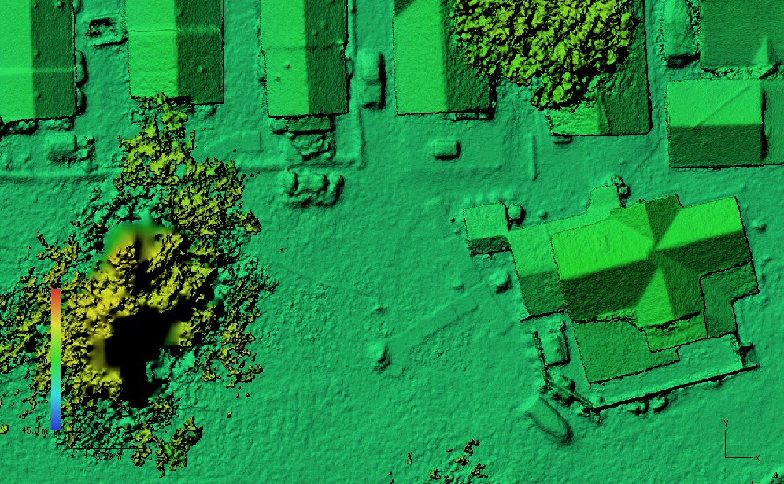
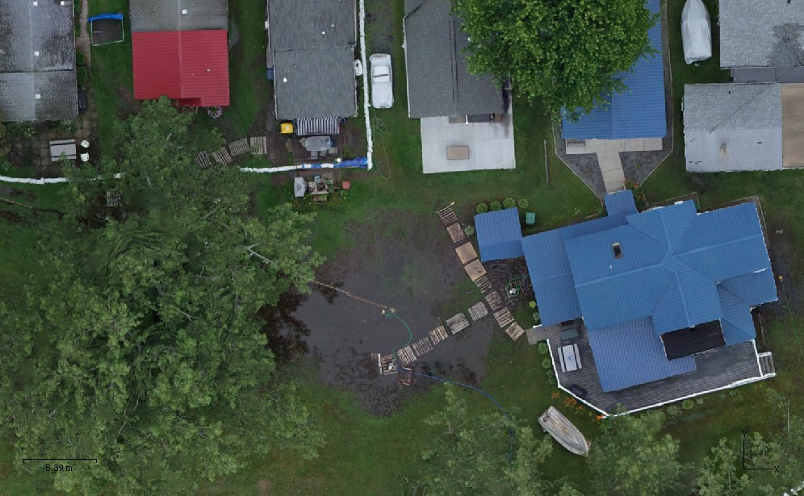

Backyard of a Sodus Point, New York home, July 13, 2017
These overlaid images are a digital elevation model and an orthophoto mosiac made from photos taken from an unmanned aerial system (drone) flown on July 13, 2017. They show standing water, pallets for walkways, pumps and hoses, and sandbags in the backyard of a Sodus Point home. The high water tables were caused by record-high water levels in Lake Ontario.
These images were collected by the U.S. Geological Survey with support from FEMA and the New York State Departments of State and Conservation.
Grab and drag the green handle to compare images.

